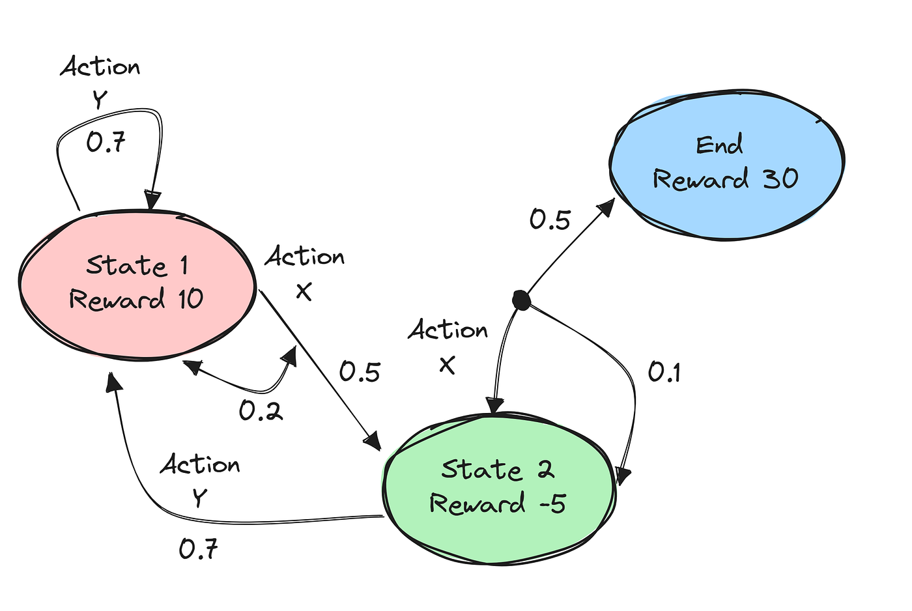
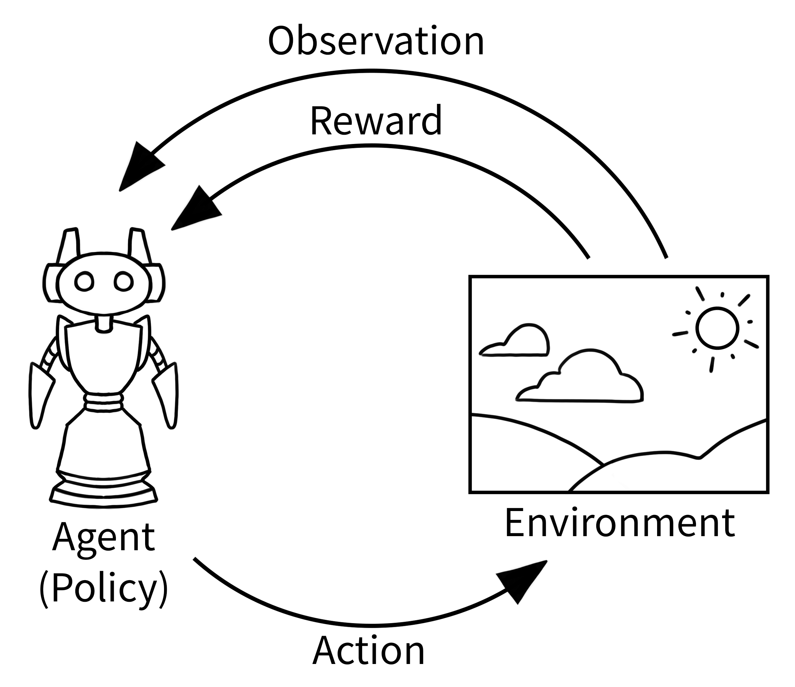

Deep Reinforcement Learning
Before diving into deep reinforcement learning, let's first motivate the key idea behind it.
Motivation
The world evolves over time, often in ways that are uncertain or difficult to predict. Rather than describe every quantity that could possibly characterize the world, we represent it using a collection of variables relevant to the problem at hand. We call this representation the state \(s_t\).
If the evolution of this state is uncertain, we can describe it probabilistically:
Now suppose an agent is embedded within this world and can take actions. The next state is no longer determined only by the current state; it also depends on what the agent chooses to do. We therefore extend the model to include the agent's action \(a_t\):
This tells us how the world may evolve in response to the agent's actions, but it does not yet tell us which outcomes the agent should prefer. To turn this into a decision-making problem, we need some way to express what constitutes a desirable or undesirable transition.
We do this with a reward function. For each transition, the reward assigns a scalar value that indicates how desirable that outcome is:
The transition model \(P\) therefore describes what can happen, while the reward function \(R\) describes what we want to happen.
We now have the basic ingredients required to describe sequential decision making in a stochastic environment. This framework is known as a Markov Decision Process (MDP):
where:
- \(\mathcal{S}\) is the set of possible states,
- \(\mathcal{A}\) is the set of possible actions,
- \(P(s_{t+1} \mid s_t, a_t)\) describes the probability of reaching \(s_{t+1}\) after taking action \(a_t\) in state \(s_t\),
- \(R(s_t, a_t, s_{t+1})\) assigns a reward to that transition.

Reinforcement Learning
The MDP gives us a framework for describing how an agent interacts with a stochastic environment, but we still need to define what it means for the agent to behave well.
Reinforcement learning makes this precise through the reward hypothesis: the agent's goal can be expressed as maximizing cumulative reward over time.
Rather than judging each action only by its immediate reward, we evaluate a policy according to the sequence of rewards it produces.
More generally, future rewards can be discounted:
where \(\gamma \in [0,1]\) is the discount factor. It determines how strongly rewards farther into the future contribute to the objective.
The expectation appears because the trajectory produced by a policy is generally not deterministic. The policy itself may be stochastic, the environment may be stochastic, or both. As a result, executing the same policy can produce different trajectories and therefore different returns.
We therefore do not optimize the return of a single trajectory. Instead, we maximize the expected return: the average return over the distribution of trajectories that the policy may produce.
Reinforcement learning then asks how an agent can learn a policy that maximizes this objective through interaction with the environment.
At each timestep, the agent observes the current state \(s_t\) and selects an action according to its policy:
The environment then responds to that action by producing a reward \(r_t\) and transitioning to a new state \(s_{t+1}\). The agent observes this new state, chooses another action, and the process repeats:

Diagram source: Gymnasium [1]
Through repeated interaction, the agent gathers experience about how its actions influence both immediate and future rewards. Reinforcement learning uses this experience to improve the policy so that the trajectories it produces achieve greater expected cumulative return.
Deep Reinforcement Learning
Deep reinforcement learning extends reinforcement learning by using deep neural networks to represent the functions that the agent must learn.
For example, we can represent the policy as a neural network parameterized by \(\theta\):
where:
- \(s\) is the current state,
- \(a\) is an action,
- \(\theta\) represents the parameters of the neural network,
- \(\pi_\theta(a \mid s)\) defines the policy's distribution over actions given the state.
The reinforcement learning objective itself does not change. We still want to find a policy that maximizes expected cumulative reward. The difference is that the policy is now represented by a high-capacity function approximator, and learning the policy becomes a problem of finding neural network parameters \(\theta\) that maximize the same objective:
The learning problem can therefore be written as:
The remaining question is how to adjust \(\theta\) so that \(J(\theta)\) increases.
Find out here.
References
- Gymnasium: A standard API for reinforcement learning and a diverse set of reference environments. https://gymnasium.farama.org/.
- OpenAI. ChatGPT. https://chatgpt.com/.